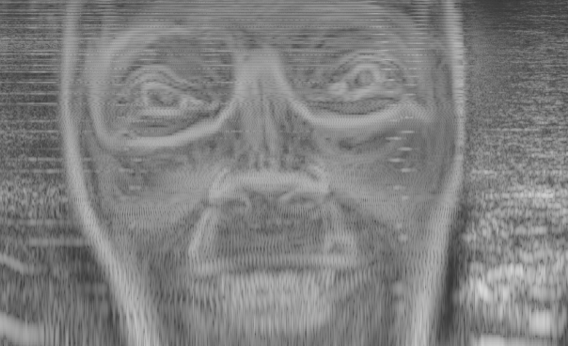

Recreating the spectrogram face
I recently stumbled upon the face hidden in the spectrogram of the Aphex Twin track called "Equation". Intrigued, I decided to try my hand at recreating the effect here on the web.
Spectrogram
So what exactly is a spectrogram?
A spectrogram is a visual representation of the frequencies which make up a sound. Say you whistle a pure "middle C", then a spectrogram would light up right at 261.6 Hz, which is the corresponding frequency for that tone. Likewise, the "A" note makes the spectrogram turn bright white at 440 Hz.
If you've ever heard of the fourier transform; a spectrogram is simply the frequency spectrum of the sound at each small moment in time, with the amplitude at each frequency visualized as a grayscale value.
Click the button to see a live spectrogram of what your computer is hearing right now. Try whistling.
Constructing the face
With this in mind, how would we go about converting an image into a sound, which can then be interpreted by a spectrogram?
The solution is simple. Let each row of the image represent a sinusoid (pure tone) at some frequency. Say the bottom of the image represents the frequency 5 kHz and the top 15 kHz. The grayscale intensity of each pixel determines the amplitude (volume) of each sinusoid. So a black pixel on the bottom row means "turn off the 5000 Hz tone", whereas a white pixel means "blast a 5000 Hz tone at max volume".
Now just scan the image, column by column. Starting with the first column, figuring out the intensity of the sinuoid for 5000 Hz, then 5001 Hz, then 5002 Hz etc, finally outputting them all as a sound (or rather, their sum), and then move over to the second column.
This will produce the, awful, but pretty darn radical, sound below.
Note that you'll need to turn on your speakers and run Chrome for this. If you're seeing a lot of distortion you may need to lower the volume.
Video
Let's have a bit of fun. Suppose we just continuously audiofy the video. How would that look/sound? Try interacting with the sound by moving around.
Take it to the limit
Something interesting starts to happen if we increase the refresh rate significantly.
It starts acting like an instrument! Notice that if you place your finger over the webcam, the sound is muted. You can produce low-pass or high-pass filters by covering only part of the webcam.